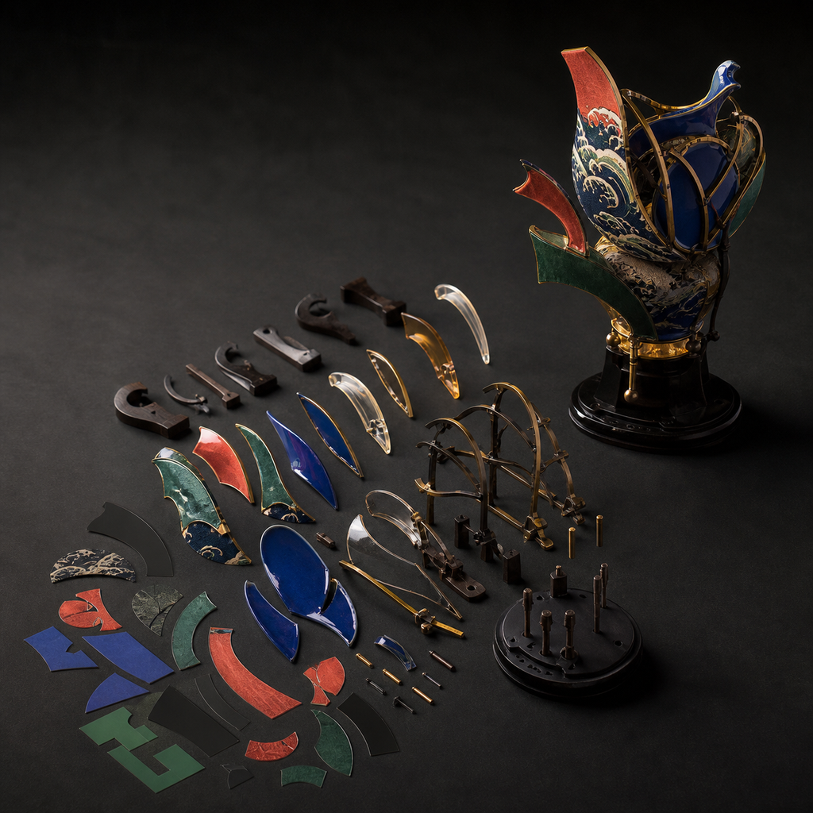

结构转译要判断的，不只是像不像
二维形象进入三维时，最先暴露的往往不是画得像不像，而是原画没有回答实体必须回答的问题。正面成立的轮廓，转到侧面可能没有足够体积；画面中被遮住的部位，模型里必须确定前后关系；飘带、尖角、细杆和悬空配件，在纸面上可以轻盈，在真实尺度下却可能过薄、失去支撑或改变重心。 如果把“相似度高”当成结构转译完成，Day 2 的初模就会在缺失信息上自行猜测。猜测一旦进入网格，后续人工修模、拆件、切片和打印都要为它付出成本；更严重的是，角色最有辨识度的颜色、纹样或姿态可能被保留了表面，却没有被转成可制造、可装配、可站立的实体关系。
具体问题
二维形象进入三维时，最先暴露的往往不是画得像不像，而是原画没有回答实体必须回答的问题。正面成立的轮廓，转到侧面可能没有足够体积；画面中被遮住的部位，模型里必须确定前后关系；飘带、尖角、细杆和悬空配件，在纸面上可以轻盈，在真实尺度下却可能过薄、失去支撑或改变重心。
如果把“相似度高”当成结构转译完成，Day 2 的初模就会在缺失信息上自行猜测。猜测一旦进入网格，后续人工修模、拆件、切片和打印都要为它付出成本；更严重的是，角色最有辨识度的颜色、纹样或姿态可能被保留了表面，却没有被转成可制造、可装配、可站立的实体关系。
核心判断
结构转译的判断对象至少有五类：外轮廓与主要体块是否在多个视角成立，遮挡关系能否被解释，细节厚度是否匹配目标尺寸，重心与落地点是否稳定，分件与连接是否允许制造和装配。形象相似只是其中一项，不能替代其余检查。
合格的 Day 1 输入应把二维线索改写为可复核约束：哪些轮廓必须保留，哪些纹样要变成浮雕、分色或材质，哪些悬空件需要贴近主体、加厚或改为独立部件，哪些背面和底部仍待补图。只有这些问题有记录，并准备主方案、备选方案和降级方案，Gate 1 才有依据决定是否进入三维。
步骤或标准
可用下面六项完成一次结构转译预检。每项都要留下视图、尺寸、标记或决定，不能只写“大致可做”。
- 锁定实体目标：写明主要用途、预计外接尺寸、观看方向和计划采用的制造方式；检查同一细节在真实毫米尺度下是否仍可辨认。
- 拆分轮廓与体块：从正面、侧面、背面和俯视方向核对头身比例、前后层级与主要负形；标出只在单一视角成立的轮廓，并决定补体积还是调整姿态。
- 解释遮挡与穿插：逐一标记被头发、衣物、翅片或配件遮住的连接位置；无法确认的部位列为待补输入，不允许生成工具代写结构事实。
- 转换色彩与纹样：决定二维颜色和图案分别对应分色、浮雕、凹槽、贴面或独立材质；检查转换后是否增加过细边界、不可达涂装区或脆弱薄片。
- 检查重力与装配：在预计尺寸下标出重心、落地点、支撑、拆件线、定位件和装配顺序；悬空或细长部位必须给出加厚、贴近主体、增加支撑或独立分件的处理。
- 形成三套范围并执行 Gate 1：主方案保留核心辨识点，备选方案降低姿态或连接风险，降级方案改为半身、浮雕或局部结构样；只有用途、视图、尺寸、版权与结构风险均可复核时才进入 Day 2。
常见错误
以下错误会把二维阶段的缺口推迟到模型、打印或涂装阶段。
- 只追求正面像原画，不补侧面、背面和底部；后果是模型只能猜测体积与连接，转动视角后比例失真，修模范围扩大。
- 把画面中的细线、尖角和悬空装饰原样做成立体；后果是实际厚度不足、支撑困难或取件易断，Gate 2 无法放行打印。
- 把二维纹样全部雕成立体结构；后果是表面过密、涂装不可达、切片细节丢失，并可能破坏原本清楚的主次关系。
- 先生成完整初模，再讨论尺寸、重心和拆件；后果是比例、底座与连接方案同时返工，有限五天排程被重复建模占用。
- 没有备选或降级方案，坚持保留所有复杂姿态与配件；后果是单个高风险部位阻塞整个项目，最终连可核验的局部样也难以完成。
与五天课程的关系
这一主题对应 Day 1“方向判断与结构转译”以及 Gate 1。当天要把已有 IP / 角色资产，或由想法、草图和初步设定形成的视觉输入，转成用途、尺寸、多视图、遮挡、厚度、重心、分件、版权边界与主 / 备 / 降级方案，并据此判断输入是否足以进入三维。
Gate 1 通过后，下一阶段是 Day 2 的 AI 三维初模与 Nomad 人工修模；模型还要在 Gate 2 接受网格封闭、真实厚度、连接面积、重心、拆件、定位、支撑空间以及 GLB / STL 版本对应检查。Gate 1 未通过时应先补图、澄清结构或缩小范围，不能让后续工具替代结构判断。
事实 / 案例 / 完成度边界
本文依据公开课程基线中的 Day 1、Gate 1、Day 2 与 Gate 2 整理。当天四张图片只用于示意二维线索如何对应体块、遮挡、支撑、分件、材料和制造状态，不是学员案例、真实课堂、真实委托或已经完成的项目成果。真实案例只有在来源、授权、文件版本、制作记录和完成状态均可核验时才能单独标注；示意图不能替代真实案例。
五天内的目标是按项目实际情况完成第一版可继续发展的文件、验证样和表达资料，不是把所有角色推进到同一精度。完成度受输入成熟度、结构复杂度、尺寸、设备、材料、打印排程和修正次数影响；课程不承诺人人完成商业级精修、一次打印成功、正式包装印刷、批量生产、正式展览、授权成交或销售，也不承诺固定实体件数或统一完成等级。
报名入口
如果你已有 IP / 角色资产，可以在报名资料中说明现有原画、角色设定或三维文件、版权状态、希望保留的核心轮廓、目标实体尺寸，以及目前最不确定的遮挡、重心或连接问题。
如果你只有想法、草图或初步设定，也可以如实填写故事、关键词、参考方向、希望做成的物品和现有设备，不需要先准备成熟原画或模型。两类起点都会从 Day 1 / Gate 1 的结构转译判断开始。公开报名地址：https://wj.qq.com/s2/27296919/9499/

课程时间：2026 年 10 月 2 日至 10 月 6 日｜青岛｜每班限 10 人
填写报名资料 →